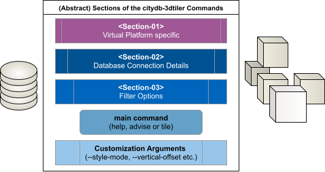

Example Commands for Advanced Use
This page lists sample commands used when testing the application with various datasets.
Please note that some parameters, such as custom attribute names, may vary depending on the selected datasets.
Command Line Sections

This application has been published as Docker images in two different repositories (ghcr.io & docker.io) and can also be run using only a Python virtual environment. The first section of the application commands will vary depending on your choice. The application consists of three main sections, one main command (advise,tile,help) and additional customization arguments. The second section contains information about database connection. The third section allows you to filter the data in your database.
Below, we’ll first explain how to configure these sections, followed by examples of how to vary the customization arguments. The first three sections will be referred to as \<Section-XX> in the command-line examples that follow.
Section-01 : Selected Virtual Platform
If you'd like, you can replace the "latest" tag in the last row with any other fixed version number.
in a Container from Docker.io
in a Container from ghcr.io
in a Virtual Environment using Python Venv
For Python Installation check the page
Do not forget to install python dependencies using
pip install requirements.txtcommand.
Section-02 : Database Connection Details
Section-03 : Filter Options
Consider that the namespace separator and the nested object separators are different than the standard CityGML notation. Please check the advise document before typing the names of the features and properties.
Filter by TypeName (ObjectClass)
The term "TypeName" refer to the ObjectClass which is available as a table with the same name. Check the advice.yml file to see a list of the existing typenames/objectclasses.
Filter by ID (objectid)
The term "ID" refer to the "objectid" column of the "feature" table. The same term is known as "gml:id" in CityGML terminology.
Main Commands
help
For the "help" command, you don't need to use any Database Connection info or Filter Option. The only need is the section-01 (virtualization).
Note that just like the main "help" (-h / --help) command, all the commands have their own help documents which will provide a subset of the arguments.
advise
For the "advise" command, you don't need to use any Filter Option. You only need to specify the section-01 and section-02 (virtualization and database connection.)
The "advise" command is creating a YAML file (in default : "advice.yml") in the current folder. You can check this document to see a summary about the existing dataset.
tile
Filter Options (\<Section-03>) are not mandatory. You can tile the hole dataset at once without filtering it.
You can save tilesets to a specific folder by adding the “--output-folder” argument.